Dari setoran absensi mingguan sampai uang makan, lalu data pegawai, WhatsApp, dan pengaturan akses.
Web SDM KPPU mengumpulkan bukti absensi dari tiga sumber, mencocokkannya per pegawai dan per hari, lalu menghitung uang makan. Pekerjaannya dibagi per pekan, bukan per bulan.
Aplikasi mengenal tiga peran. Peran terlihat di pojok kanan atas, di sebelah tulisan Peran akun.
| Peran | Yang bisa dilakukan |
|---|---|
| Superadmin | Semua halaman dan semua tindakan: mengunggah setoran, mengisi dan mengonfirmasi Rekap ST, mengubah data pegawai, mengatur aturan uang makan, mengajukan dan mengunci hasil, mengelola akun dan WhatsApp. |
| Admin | Membuka semua halaman, tetapi hanya untuk dibaca. Satu hal boleh diubah: keputusan rekonsiliasi, yaitu memutuskan clash, mengesahkan status hari, dan mengeluarkan bukti yang keliru. Keputusan pencocokan identitas disimpan bersama keputusan itu, sehingga tombolnya juga aktif untuk Admin. Menu Tambah Data tidak tampil. |
| Operator Rekap ST | Hanya halaman Rekap ST, untuk satu kantor. Operator memasukkan surat tugas pegawai kantornya, melihat daftar ST kantor itu, dan mengganti password sendiri. |
SDM, Reviewer, Keuangan, dan Viewer tidak lagi dipakai. Akun yang masih memegang salah satunya tidak bisa masuk. Layar menampilkan pesan bahwa peran akun sudah tidak berlaku, dan akun baru bisa dipakai lagi setelah Superadmin menetapkan salah satu dari tiga peran di atas.
Pekan berjalan Senin sampai Minggu. Setiap pekan, tiga file untuk seluruh KPPU masuk ke aplikasi. Sistem langsung menilai hari-hari yang bukti dari ketiga sumbernya tidak saling bertentangan. Hanya hari yang bertentangan, yang disebut clash, sampai ke meja Admin.
| Kapan | Siapa | Pekerjaan dan halamannya |
|---|---|---|
| Setelah pekan berakhir | Superadmin | Mengunggah tiga file di Setoran & Review. Surat tugas bisa juga diisi di Rekap ST. |
| Saat ada nama yang belum cocok | Superadmin atau Admin | Memutuskan di Pencocokan Identitas. |
| Setelah setoran masuk | Admin atau Superadmin | Memutuskan clash di Rekonsiliasi. Hari tanpa clash tidak perlu disentuh. |
| Kapan saja | Semua peran yang punya akses baca | Memeriksa angka di Uang Makan dan mengunduh daftar nominatif. |
| Setelah bulan berakhir | Superadmin, lalu Superadmin lain | Mengonfirmasi kelengkapan ST bulanan, mengajukan hasil, lalu menyetujui dan mengunci. |
Sebelum ketiga sumber pekan itu lengkap, halaman Uang Makan tetap menampilkan angka, tetapi sebagai perkiraan dengan keterangan Menunggu setoran. Angka itu berubah menjadi final tanpa tindakan tambahan begitu sumber terakhir dinyatakan lengkap dan clash yang tersisa sudah diputuskan.
Bab disusun menurut urutan kerja yang sebenarnya: setor, cocokkan identitas, rekonsiliasi, hitung uang makan, ajukan. Kepegawaian, WhatsApp, dan akses menyusul sesudahnya. Setiap bab memakai langkah bernomor, lalu menjelaskan apa yang akan terlihat dan apa yang perlu dilakukan bila ada yang tampak janggal.
Nama tombol dan label layar ditulis dengan huruf tebal, persis seperti di aplikasi. Tangkapan layar diambil dari data uji bulan April 2026. Nama pegawai diganti menjadi Pegawai 001, Pegawai 002, dan seterusnya, dan NIP diganti pola 1990xxxxxxxxxxx001. Angka di gambar tidak mencerminkan data bulan yang sedang Anda kerjakan.
Beberapa kebiasaan di bab ini berlaku di semua halaman: periode di bagian atas, pekan aktif, status simpan di menu samping, dan alamat halaman.
Buka alamat web SDM yang diberikan administrator, lalu isi Email akun dan Password. Akun dibuat oleh Superadmin. Password minimal 14 karakter.
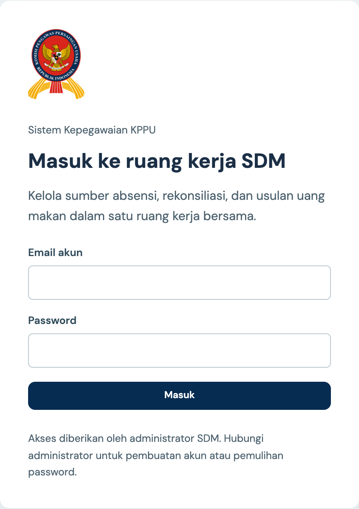
Lihat pojok kanan atas. Periode KPPU adalah bulan yang sedang dikerjakan. Pilihan ini dipakai oleh Setoran, Rekap ST, Rekonsiliasi, dan Uang Makan sekaligus. Di sebelahnya, Peran akun menunjukkan nama dan peran Anda. Semua keputusan dicatat atas nama akun itu, karena itu satu akun dipakai satu orang.
Baca menu samping. Menu dibagi tiga kelompok: Absensi & uang makan, Kepegawaian, dan Komunikasi & akses. Lencana merah di samping menu berarti ada pekerjaan yang menunggu. Lencana di Setoran & Review menghitung pekan yang sudah lewat tetapi belum lengkap. Lencana di Rekonsiliasi menghitung hari yang menunggu keputusan, dan lencana di Pencocokan Identitas menghitung nama yang masih perlu dicocokkan.
Perhatikan kotak di bagian bawah menu samping. Tulisan Tersimpan di server beserta nomor revisi berarti perubahan terakhir sudah aman. Selama tertulis Menyimpan perubahan, tunggu sebelum berpindah halaman atau menutup peramban.
Setiap halaman punya alamat sendiri di belakang tanda pagar. Memuat ulang peramban membuka halaman yang sama, tombol kembali dan maju bekerja, dan alamat bisa disimpan sebagai penanda atau dikirim ke rekan.
| Halaman | Alamat | Halaman | Alamat |
|---|---|---|---|
| Setoran & Review | #/setoran | People Dashboard | #/dashboard |
| Rekap ST | #/rekap-st | Data Pegawai | #/pegawai |
| Rekonsiliasi | #/rekonsiliasi | Tambah Data | #/tambah-data |
| Pencocokan Identitas | #/pencocokan | Automation Center | #/automation |
| Uang Makan | #/uang-makan | Ruang Kerja & Akses | #/akses |
Admin yang mengetik #/tambah-data dikembalikan ke Setoran & Review.
Halaman Setoran & Review, Rekonsiliasi, dan Uang Makan berbagi satu pilihan Pekan aktif. Pilihan itu tersimpan di peramban Anda, bukan di server, sehingga tidak mengubah apa yang dilihat orang lain. Pekan yang melintasi dua bulan punya dua pilihan tampilan di Setoran & Review: Bagian bulan hanya menghitung tanggal yang jatuh di bulan terpilih, Pekan penuh menghitung Senin sampai Minggu.
Kotak merah bertuliskan Perubahan belum tersimpan muncul di atas halaman. Tiga tombolnya punya fungsi berbeda. Backup pekerjaan mengunduh isi ruang kerja yang ada di layar Anda. Coba simpan mengulang pengiriman. Muat data server membuang perubahan yang belum tersimpan dan memuat ulang dari server, jadi unduh backup lebih dulu bila perubahan itu masih berarti.
Layar sempit menyembunyikan menu samping di balik tombol menu di kiri atas. Tabel lebar bergulir ke samping di dalam kotaknya sendiri, sehingga halaman tidak ikut bergeser.
Halaman Setoran & Review menjawab satu pertanyaan: file apa yang belum masuk untuk pekan ini? Ada tiga sumber untuk seluruh KPPU, bukan per kantor.
| Sumber | Isi |
|---|---|
| Mesin Offline | Ekspor mesin absensi di Pusat dan Kanwil, termasuk rekap lokal Kanwil. Isinya jam scan masuk dan pulang. |
| Mesin Online | Presensi dari aplikasi di ponsel: WFO atau WFA, jam, status persetujuan, dan lokasi bila tersedia. |
| Rekap ST | Rekap surat tugas: nomor, peserta, tanggal tugas, dan tujuan. Bisa diisi langsung di halaman Rekap ST atau diunggah sebagai Excel. |
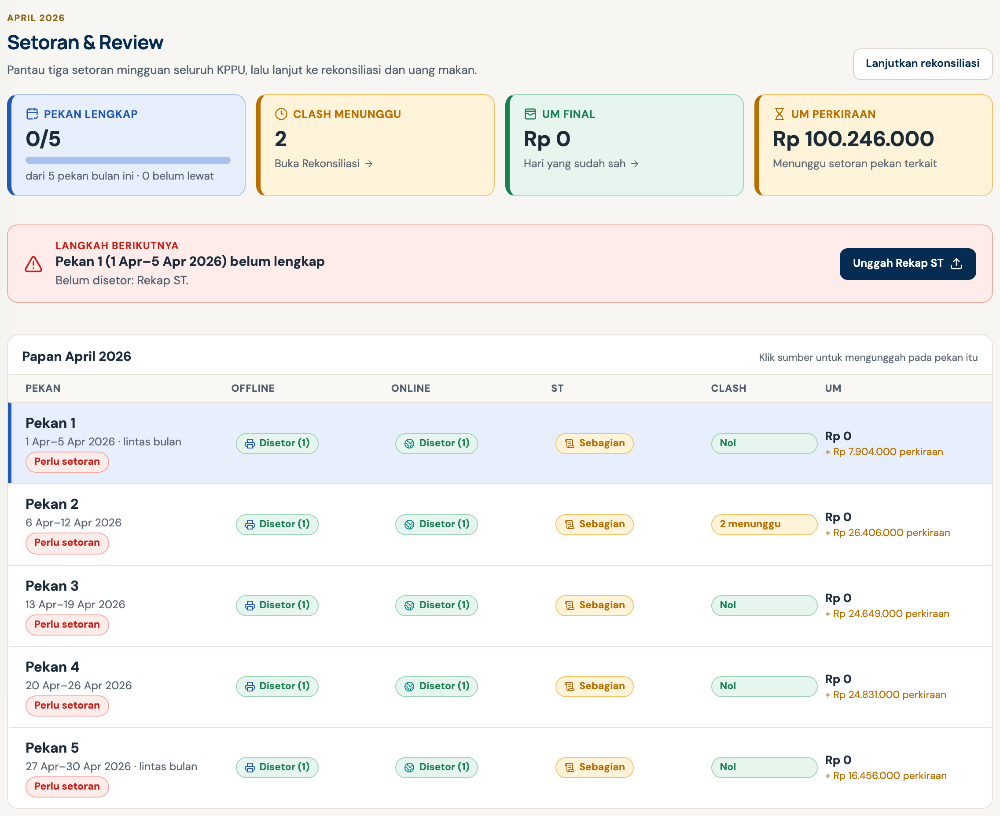
Empat ubin di bagian atas bisa diklik. Pekan lengkap menunjukkan berapa pekan yang sudah lewat dan sudah lengkap ketiga sumbernya. Clash menunggu membuka Rekonsiliasi. UM final membuka Uang Makan dan hanya menjumlah hari yang sudah sah. UM perkiraan menjumlah hari yang datanya ada tetapi pekannya belum lengkap.
Banner Langkah berikutnya selalu menampilkan satu hal saja. Urutan prioritasnya: merah untuk pekan yang sudah lewat tetapi masih kekurangan sumber (dengan tombol unggah sumber itu), kuning untuk clash yang menunggu keputusan, biru untuk pekan yang masih berjalan, dan hijau bila semua lengkap dan tidak ada clash.
Papan memuat satu baris per pekan. Klik nama pekan untuk memilihnya, atau klik sel sumber untuk langsung membuka unggahan sumber itu pada pekan tersebut.
| Tampilan | Artinya |
|---|---|
| Disetor (n) | Sumber sudah masuk, n adalah jumlah file yang tersimpan untuk pekan itu. |
| Sebagian | Sumber tercatat masuk, tetapi cakupannya baru sampai tanggal tertentu. Untuk Rekap ST, ini lazim terjadi sampai konfirmasi bulanan dibuat (Bab 3). |
| Belum dinyatakan | Ada data, tetapi belum ada pernyataan bahwa sumber itu lengkap untuk pekan ini. |
| Belum disetor | Pekan sudah lewat dan sumber ini belum ada. Untuk pekan yang belum berjalan, selnya hanya berisi tanda hubung berwarna abu. |
| Nihil atau Tidak ada data | Superadmin menyatakan tidak ada ST pada pekan itu, atau tidak ada data dari sumber tersebut, lengkap dengan alasannya. |
| Label | Artinya |
|---|---|
| Belum dimulai | Pekan belum tiba. |
| Berjalan | Hari ini jatuh di pekan itu. Setor setelah pekan selesai. |
| Perlu setoran | Pekan sudah lewat dan ada sumber yang belum lengkap. |
| Perlu keputusan | Semua sumber lengkap, tetapi masih ada clash yang belum diputuskan. |
| Selesai | Semua sumber lengkap dan tidak ada clash tersisa. |
Unggah hanya bisa dilakukan Superadmin. Akun Admin melihat tombol Lihat sumber sebagai gantinya dan tetap bisa membaca file yang sudah masuk.
Pilih pekannya. Klik barisnya di papan, atau pakai Pekan aktif di bawah papan.
Cari kartu sumber yang sesuai di bagian Setoran pekan. Seret file Excel ke kartu itu, atau klik tombol di dalamnya. Tombolnya bertuliskan Pilih file atau seret ke sini bila belum ada file, dan Unggah tambahan / koreksi bila sudah ada.
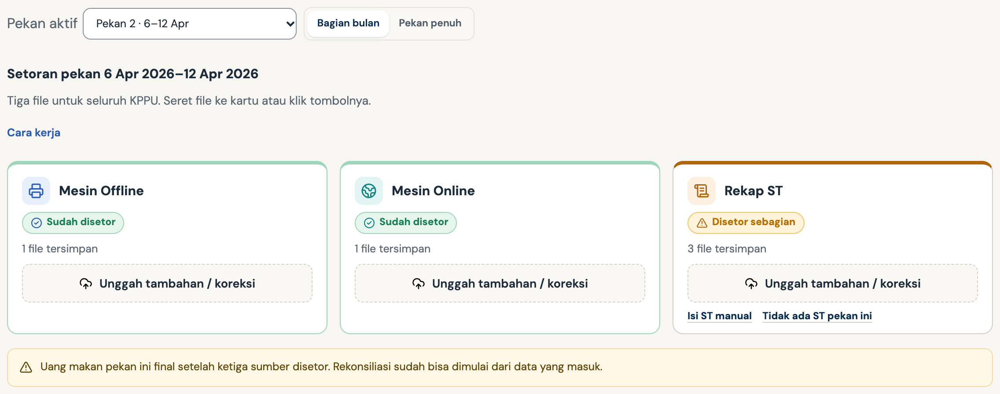
Bila memakai tombol, kotak Pilih file terbuka. Pilih satu atau beberapa file Excel (.xls atau .xlsx) dari sumber aslinya. Jangan menyimpan ulang file dengan program lain lebih dulu, karena parser mengenali struktur file asli.
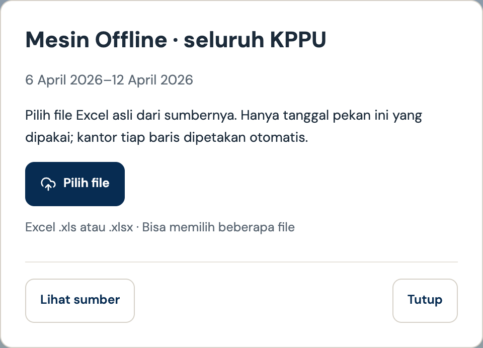
Tunggu hasilnya muncul di bagian bawah. Setiap file mendapat satu baris, misalnya jumlah baris baru yang tersimpan, jumlah duplikat yang dilewati, dan jumlah baris di luar pekan yang tidak dipakai. File yang mencakup beberapa pekan boleh diunggah utuh: hanya tanggal pekan terpilih yang dipakai, dan file yang sama bisa diunggah lagi untuk pekan berikutnya.
Setelah unggahan berhasil, sumber itu otomatis dinyatakan lengkap sampai akhir pekan (atau sampai hari ini bila pekannya masih berjalan). Tombol Lanjut ke rekonsiliasi menampilkan jumlah clash yang menunggu.
Bila file Mesin Online diseret ke kartu Mesin Offline, unggahan ditolak dengan pesan File terdeteksi sebagai Mesin Online. Pindahkan file ke kartu yang benar.
Di bawah kartu ada lipatan Pengaturan format tanggal. Bawaannya mendeteksi urutan tanggal sendiri dan meminta konfirmasi bila 03/04/2026 bisa dibaca dua cara. Ubah ke DD/MM/YYYY hanya bila seluruh file Anda memang berurutan begitu.
Kadang satu sumber kosong pada suatu pekan: mesin tidak menyala, atau tidak ada surat tugas. Klik Tidak ada data pekan ini (untuk ST, Tidak ada ST pekan ini) di kartu yang bersangkutan, lalu tulis dasarnya, minimal 10 karakter. Pernyataan ini tercatat di riwayat dan menandai sumber itu beres. Tombolnya hanya aktif untuk pekan yang sudah lewat. Tautan Isi ST manual di kartu Rekap ST membuka halaman Rekap ST.
Uang makan pekan itu final setelah ketiga sumber dinyatakan lengkap. Sebelum itu, halaman Uang Makan menampilkannya sebagai perkiraan, dengan alasan Menunggu setoran. Rekonsiliasi tidak perlu menunggu: clash bisa diputuskan dari data yang sudah masuk, dan keputusannya tetap berlaku bila file susulan datang.
Lipatan File sumber di bawah kartu mendaftar setiap file beserta kantor asal, periode, jumlah baris, dan jumlah catatan peringatan. Superadmin bisa:
| Jenis | Ciri |
|---|---|
| Ekspor mesin absensi, baris per hari | Header Scan Masuk dan Scan Pulang, atau Clock In dan Clock Out. Jadwal, scan, pengecualian, dan unit dibaca terpisah. |
| Mesin Online dari aplikasi HP | WFO atau WFA, kantor dan unit per baris, status Approved, Reject, atau Pending. |
| Data Transaksi Karyawan (Kanwil) | Nama dan nomor mesin di baris, tanggal di kolom, sel berisi jam masuk dan pulang. |
| Jadwal absen manual per bulan | Satu sheet per bulan, kolom keterangan dan jam, termasuk penanda Absen Eror. |
| Daily Attendance Checking Report | Hanya kode harian tanpa jam. Sel kosong dibaca Normal sesuai legenda. |
| Rekap ST | Nomor surat, peserta, tanggal tugas, tujuan. |
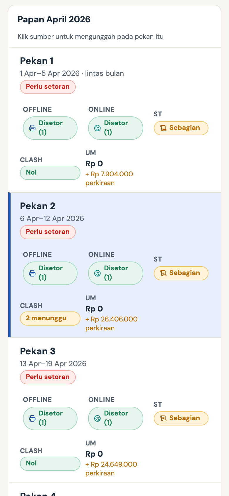
Cek tanggal terakhir pada file. Ekspor mesin yang diambil sebelum hari terakhir pekan selesai tidak memuat scan hari-hari terakhir, dan sumbernya tercatat Sebagian sampai tanggal itu. Unggah ekspor yang lebih baru lewat tombol Unggah tambahan / koreksi.
Satu entri di halaman ini adalah satu surat tugas: satu nomor, satu rentang tanggal, dan beberapa pegawai. Catatan yang aktif langsung menjadi bukti di Rekonsiliasi.
Superadmin dan Operator Rekap ST bisa menambah ST. Admin hanya melihat daftarnya. Operator hanya melihat dan menambah ST untuk pegawai di kantor cakupannya.
Isi No. ST, Tanggal ST, Tanggal tugas mulai, Tanggal tugas selesai, dan Tujuan. Rentang tugas paling panjang 31 hari. Bila tugas hanya satu hari, kosongkan tanggal selesai atau isi sama dengan tanggal mulai.
Ketik nama atau NIP di kolom Cari pegawai. Daftar kecocokan muncul di bawahnya. Klik salah satu, atau tekan Enter untuk memilih hasil teratas. Enter di kolom ini hanya memilih pegawai dan tidak mengirim formulir. Escape mengosongkan pencarian. Satu ST menampung paling banyak 50 pegawai.
Periksa ringkasan di atas tombol simpan, misalnya 3 pegawai × 3 hari = 9 baris, beserta tanggal-tanggalnya. Hapus pegawai yang salah dengan tanda silang di kartunya.
Klik Simpan rekap ST. Baris yang sudah ada dilewati, bukan digandakan.
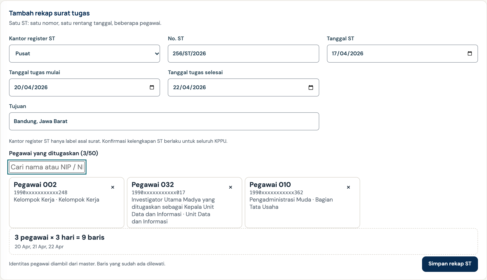
Pilihan ini (hanya tampil untuk Superadmin) sekadar label asal surat. Ia tidak membatasi pegawai mana yang bisa ditugaskan dan tidak membuat konfirmasi kelengkapan menjadi per kantor.
Menambah ST tidak otomatis menyatakan rekapnya lengkap. Kelengkapan ST dinyatakan sekali per bulan untuk seluruh KPPU, yaitu Pusat dan Kanwil I sampai VII, oleh Superadmin setelah rekap dicocokkan dengan buku register. Panel Kelengkapan ST bulanan menampilkan statusnya: Belum dikonfirmasi, Data ada belum dikonfirmasi, Parsial, Lengkap, atau Nihil.
Tunggu sampai bulannya berakhir. Konfirmasi tidak bisa dibuat untuk bulan yang belum selesai.
Klik Konfirmasi rekap lengkap. Bila memang tidak ada ST sama sekali, tombolnya berganti menjadi Konfirmasi nihil ST. Tulis dasar konfirmasi minimal 10 karakter.
Menambah ST dari kantor mana pun pada bulan yang sudah dikonfirmasi membuka konfirmasinya lagi. Sebelum menyimpan, layar menampilkan kotak peringatan yang menyebut bulan terdampak dan bahwa uang makan final bulan itu ditahan sampai dikonfirmasi ulang. Pilih Jangan tambah bila Anda belum siap mengonfirmasi ulang.
Register ST yang diunggah sebagai Excel tidak bisa dikonfirmasi dari panel ini. Panel menampilkan catatan agar Anda mengonfirmasi cakupan file itu di Setoran & Review, lewat Konfirmasi lengkap pada barisnya di lipatan File sumber.
Daftar mengelompokkan baris per surat: satu baris tabel untuk satu ST, dengan jumlah pegawai, rentang tanggal, tujuan, kantor register, dan status. Klik nomor ST untuk membuka rincian per pegawai dan per tanggal. Hanya Superadmin yang melihat tombol Batalkan di rincian itu. Pembatalan meminta alasan minimal 10 karakter dan tercatat di riwayat. Baris yang dibatalkan tetap tampil dengan status Dibatalkan, tetapi tidak lagi menjadi bukti.
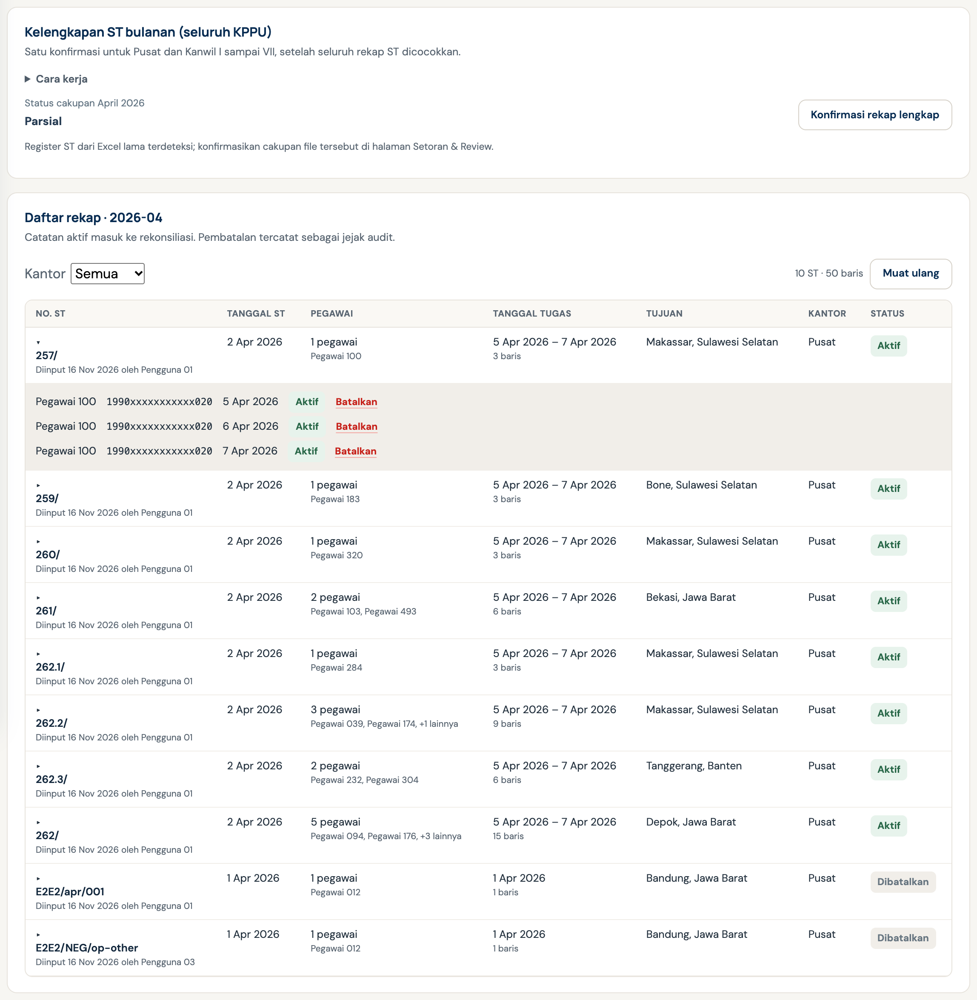
Operator tidak melihat menu samping. Layarnya hanya memuat halaman Rekap ST, dengan nama akun dan kantor cakupan di bagian atas, tombol Keluar, dan lipatan Ganti password di bagian bawah. Operator tidak melihat panel kelengkapan dan tidak bisa membatalkan baris. Bila kantor yang tertulis di atas salah, minta Superadmin mengubah cakupannya di Ruang Kerja & Akses.
Tidak ada satu ID yang dipakai di semua sumber. Sistem mencocokkan identitas secara berjenjang dan hanya meminta keputusan untuk kasus yang meragukan.
Mesin pusat dan aplikasi HP memakai NIP. Mesin Kanwil II memakai NIKA. Kanwil I dan VI hanya mencatat nomor mesin. Rekap ST hanya menulis nama, sering disingkat. Karena itu sistem mencoba, berurutan: NIP, lalu NIKA atau ID aplikasi, lalu nomor mesin per kantor, lalu nama (per kata, dengan singkatan dan salah ketik ditoleransi), dan terakhir keputusan yang pernah Anda simpan. Keputusan diingat untuk setoran berikutnya.
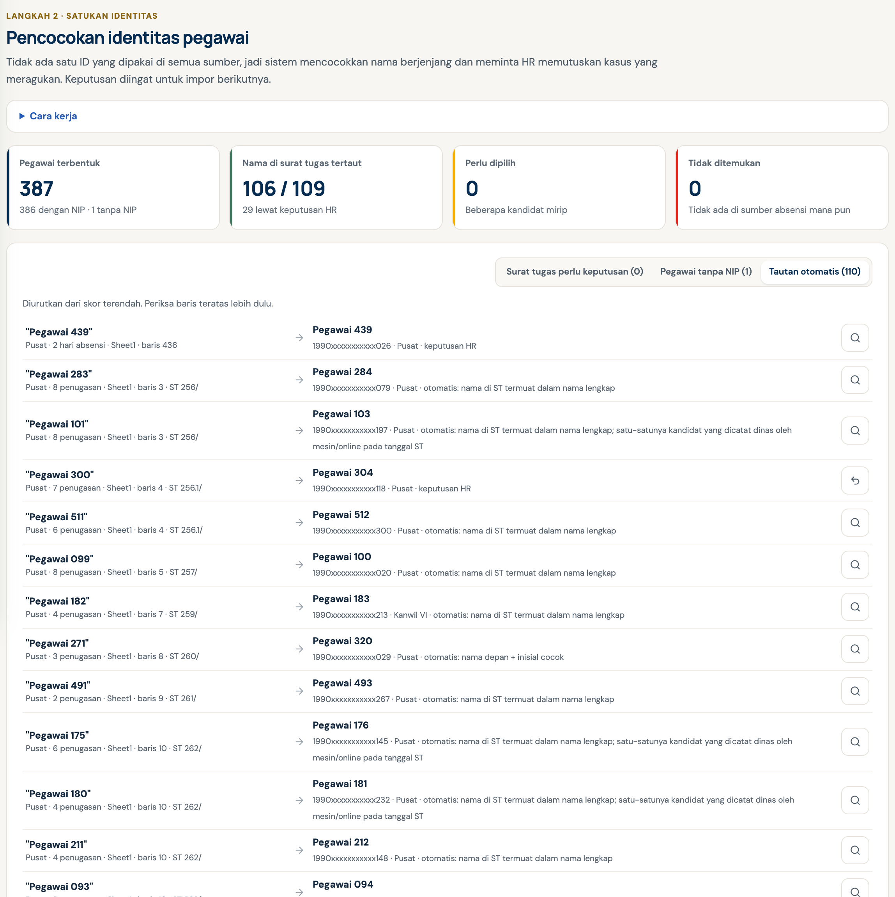
| Tab | Isi dan tindakan |
|---|---|
| Surat tugas perlu keputusan | Nama di Rekap ST yang punya beberapa kandidat mirip, atau tidak ketemu. Klik salah satu kandidat (angkanya adalah skor kemiripan), pilih Cari lain untuk mencari manual, atau Bukan pegawai / abaikan. |
| Pegawai tanpa NIP | Orang yang hanya muncul di sumber Kanwil. Mereka tetap direkap, tetapi daftar nominatif uang makan butuh NIP. Pilih kandidat untuk menggabungkan, Pegawai tersendiri bila memang orang berbeda, atau lengkapi NIP lewat Data Pegawai atau Impor massal. |
| Tautan otomatis | Pasangan nama dan pegawai yang dibuat sistem sendiri, diurutkan dari skor terendah. Periksa baris teratas lebih dulu. Ikon kaca pembesar mengganti tautan, dan ikon panah melengkung membatalkan keputusan yang pernah Anda simpan. |
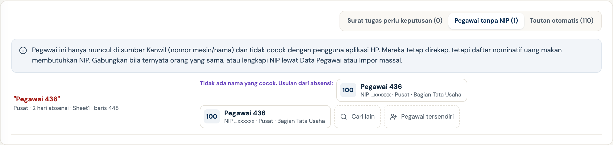
Bila setelah semua sumber digabung ada pola yang janggal, misalnya dua profil dengan NIP berbeda tetapi sumber yang sama, panel Konflik identitas muncul di atas daftar. Dua tombol yang menggabungkan menampilkan kotak konfirmasi Gabungkan dua identitas? yang menyebut kedua nama dan menegaskan bahwa penggabungan tidak bisa diurungkan dari halaman ini. Tombol Orang berbeda tidak butuh konfirmasi karena bisa dibatalkan: toast di bagian bawah layar membawa tombol Urungkan selama sekitar 8 detik, dan keputusannya juga bisa dibatalkan kemudian lewat tab Tautan otomatis.
Memilih kandidat di tab ini langsung menggabungkan dua profil, tanpa kotak konfirmasi dan tanpa tombol urung di daftar. Bandingkan NIP, kantor, dan unit kandidat sebelum mengklik. Jangan menggabungkan dua orang hanya karena namanya mirip.
Simpan kolom NIP sebagai teks agar 18 digitnya utuh. Excel yang mengubah NIP menjadi angka ilmiah (1,99E+17) merusak pencocokan. Bila identitas peserta ST kosong, biarkan kosong. Jangan menyalinnya dari baris sebelumnya.
Bila Rekap ST menulis nama panggilan yang belum cocok dengan pegawai manapun (misalnya hanya nama depan), hari itu tertahan tanpa muncul sebagai clash. Rekonsiliasi menampilkan catatan kuning dengan tautan ke halaman ini. Selesaikan pencocokannya di sini, dan hari itu terhitung lagi.
Mesin Offline, Mesin Online, dan Rekap ST berkedudukan setara. Tidak ada sumber yang otomatis menang. Hari yang buktinya tidak saling bertentangan valid sendiri, dan Admin hanya memutuskan hari yang bertentangan.
Halaman ini bekerja per pekan. Pilih pekan lewat Pekan aktif. Empat ubin di atas merangkum keadaan pekan itu.
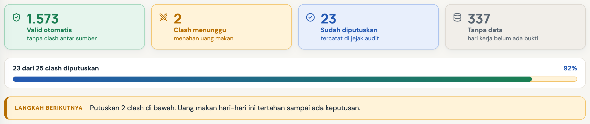
| Ubin | Artinya |
|---|---|
| Valid otomatis | Hari yang punya bukti dan tidak ada pertentangan antar sumber. |
| Clash menunggu | Hari yang bertentangan dan menahan uang makan sampai diputuskan. |
| Sudah diputuskan | Clash yang sudah diputuskan, tercatat dengan nama pemutus dan waktu. |
| Tanpa data | Hari kerja yang belum punya bukti sama sekali, biasanya karena setoran pekan itu belum masuk. |
Dua tab di bagian atas, Antrean clash dan Matriks harian, memberi dua cara masuk ke pekerjaan yang sama.
Setiap clash menjadi satu kartu. Kartu memuat nama, NIP, kantor, tanggal, jenis clash, dan tingkat (Rendah, Sedang, atau Tinggi). Di bawahnya ada tiga kolom berdampingan: apa kata Mesin Offline, apa kata Mesin Online, dan apa kata Surat Tugas pada hari itu. Perbedaan antar kolom itulah yang perlu Anda putuskan.
Baca ketiga kolom. Isinya jam masuk dan pulang, kode pengecualian, mode WFO atau WFA beserta status Approved, dan nomor serta tujuan ST. Kolom yang kosong bertuliskan tidak ada catatan.
Tulis catatan keputusan di kotak yang tersedia. Boleh dikosongkan: sistem lalu memakai catatan standar sesuai tombol yang Anda tekan. Catatan minimal 3 karakter dan tersimpan di jejak audit.
Tekan satu tombol keputusan. Setiap tombol menampilkan dampaknya pada uang makan, misalnya Akui hadir di kantor dengan keterangan dapat UM Rp 37.000, atau Akui dinas dengan keterangan tanpa UM. Satu keputusan berlaku untuk semua hari di dalam kartu itu.
Kartu pindah ke daftar Sudah diputuskan dan fokus berpindah ke kartu berikutnya. Untuk membatalkan, buka daftar itu dan tekan Batalkan keputusan.
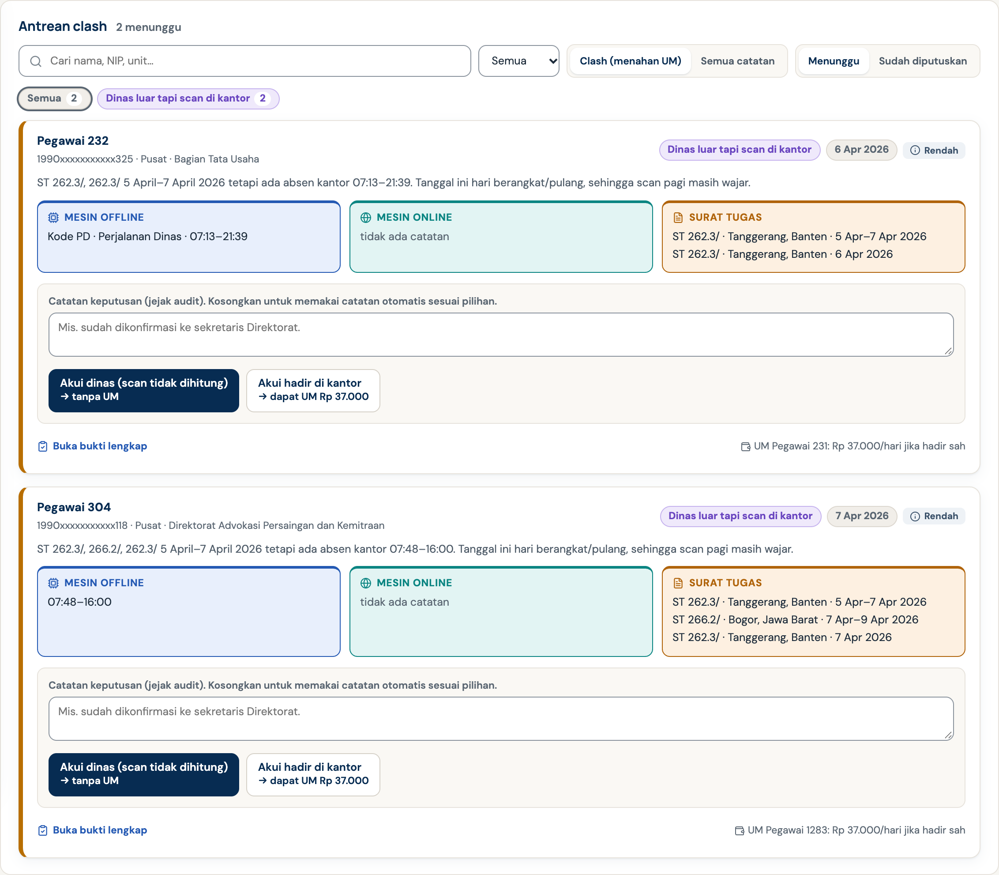
Di atas kartu ada pencarian, filter kantor, dan dua pasang pilihan. Clash (menahan UM) memperlihatkan kasus yang menahan uang makan, sedangkan Semua catatan menambahkan catatan yang tidak menahan. Menunggu dan Sudah diputuskan memisahkan kartu yang belum dan sudah selesai. Deretan chip di bawahnya menyaring menurut jenis clash dan menampilkan jumlahnya.
| Jenis | Pilihan keputusan |
|---|---|
| Pasangan scan berbeda antar sumber | Pakai jam mesin offline; Dinas yang valid (tanpa UM); Tidak hadir atau tidak sah. |
| Status harian berbeda antar sumber | ST atau dinas yang valid (tanpa UM); Absensi hadir yang valid; Tidak hadir atau tidak sah. |
| Dinas luar tapi scan di kantor | Akui dinas (scan tidak dihitung); Akui hadir di kantor. |
| Cuti atau sakit tapi ada absen hadir | Tetap cuti atau sakit; Akui hadir (cuti dibatalkan). |
| Surat tugas tumpang tindih | Sudah diklarifikasi, satu ST berlaku; Keduanya sah (ST berurutan). |
| Dinas di mesin, ST tidak ditemukan | ST ada atau dinas sah; Tidak sah, dihitung tanpa keterangan. |
| WFO di luar kantor, jam identik, jam manual | Diterima setelah diverifikasi; Tidak sah. |
| Penugasan tanpa nomor ST | Nomor ST sudah dikonfirmasi. |
Bila kartu belum cukup untuk memutuskan, klik Buka bukti lengkap di dasar kartu. Panel samping menampilkan semua bukti per tanggal beserta tombol keputusan yang sama.
Matriks menampilkan satu sel untuk setiap pegawai pada setiap hari dalam pekan terpilih. Pilihan Saring di atasnya mengatur siapa yang tampil: Perlu tindakan (bawaan, yaitu yang punya hari flag atau tidak ditemukan), Flag, Tidak ditemukan, atau Semua. Pencarian dan filter kantor melengkapinya, dan daftar dibagi per 50 pegawai.
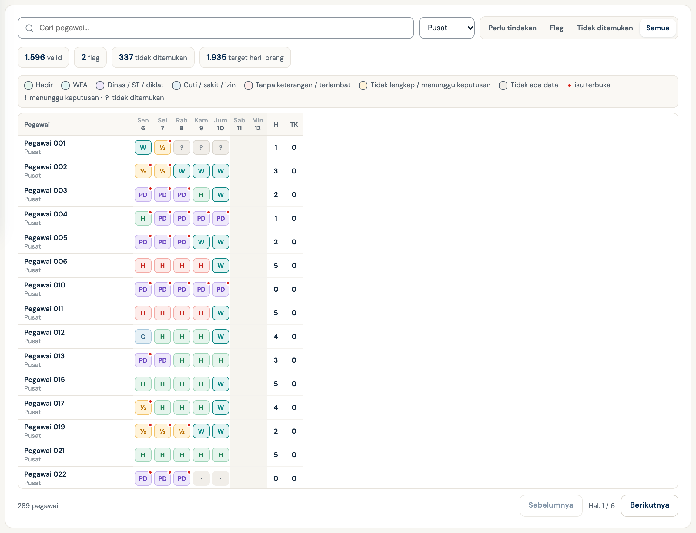
| Kode | Arti | Kode | Arti |
|---|---|---|---|
| H | Hadir di kantor (merah bila terlambat) | C | Cuti |
| W | Hadir WFA | S | Sakit |
| DL | Dinas lokal atau dalam kota | I | Izin |
| PD | Perjalanan dinas | TK | Tanpa keterangan |
| DK | Diklat atau konsinyering | ½ | Bukti tidak lengkap |
| ! | Flag, menunggu keputusan | ? | Tidak ditemukan bukti |
Titik · berarti tanggalnya belum berlangsung atau belum ada data, dan sel kosong berlatar abu adalah akhir pekan tanpa absen. Kolom H dan TK di ujung kanan menghitung hari hadir dan hari tanpa keterangan dalam pekan itu. Warna selalu menyertai teks atau kode dan tidak berdiri sendiri.
Klik sel mana pun untuk membuka panel Detail hari. Tombol Escape atau tanda silang menutupnya. Panel menampilkan tabel bukti dari semua sumber untuk hari itu (jam masuk, jam pulang, kode, lokasi, jadwal, file asal dan barisnya), ST yang berlaku, dan kotak Keputusan hari.
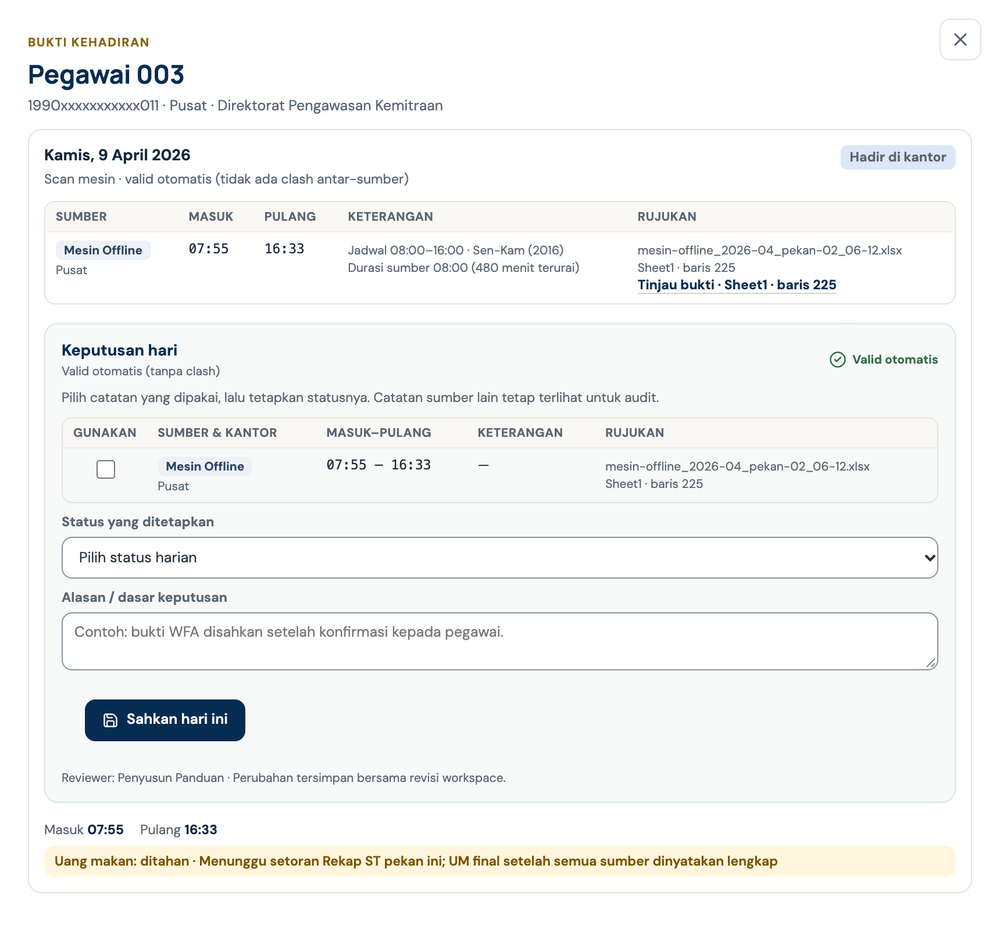
Di kolom Gunakan, centang bukti yang menjadi dasar keputusan. Bukti lain tetap terlihat untuk audit.
Pilih Status yang ditetapkan: hadir di kantor, hadir WFA, dinas lokal, perjalanan dinas, diklat, cuti, sakit, izin, atau tanpa keterangan.
Isi Alasan / dasar keputusan, minimal 3 karakter, lalu klik Sahkan hari ini. Bila hari itu sudah punya keputusan, tombolnya bertuliskan Simpan perubahan keputusan dan ada tombol Hapus keputusan. Semua kekurangan isian ditampilkan sekaligus, jadi Anda tidak perlu mengulang tombol berkali-kali.
Bila bukti atau identitas berubah setelah Anda memutuskan, panel menampilkan peringatan bahwa keputusan perlu ditinjau ulang sebelum uang makan dihitung. Hari yang belum berlangsung tidak bisa disahkan. Bukti yang identitasnya belum cocok juga ditolak sampai Pencocokan Identitas selesai.
Di baris tabel bukti ada tautan Tinjau bukti, dan untuk ST, Tinjau peserta ST. Tautan itu membuka formulir kecil: tulis alasan (minimal 10 karakter), klik Lihat dampak untuk melihat hari mana yang berubah dan bagaimana uang makannya, centang konfirmasi, lalu klik Tolak bukti ini atau Keluarkan peserta ST. Catatan aslinya tetap diarsipkan dan bisa diaktifkan kembali dengan cara yang sama. Mengeluarkan bukti berbeda dari memutuskan clash: yang pertama mencabut bukti dari perhitungan, yang kedua memilih bukti mana yang dipercaya.
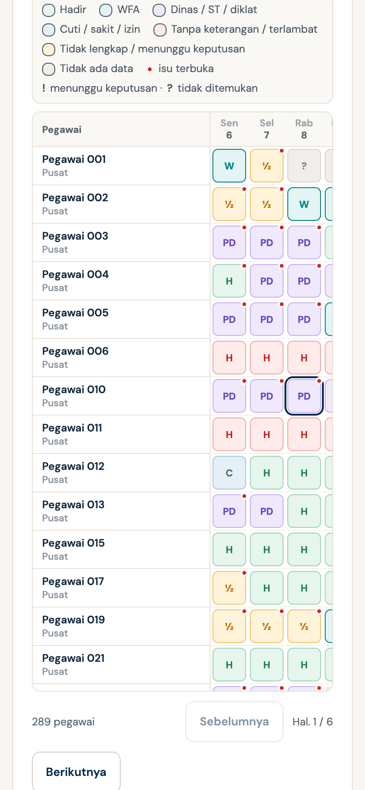
Superadmin dan Admin sama-sama bisa memutuskan clash, mengesahkan hari, dan mengeluarkan bukti. Operator tidak punya akses ke halaman ini.
Halaman ini menjawab dua pertanyaan: berapa yang dibayar, dan kenapa ada hari yang tidak dibayar. Angkanya berubah mengikuti setoran dan keputusan, tanpa tombol hitung.
Pilihan Periode hasil di bagian atas menentukan jangkauan hitungan. Pekan terpilih menampilkan satu pekan, dengan Pekan aktif di sebelahnya. Akumulasi bulan menjumlahkan semua pekan dalam bulan dan menampilkan panel pengajuan (Bab 7). Tombol Unduh daftar nominatif mengunduh hasil sesuai pilihan ini.
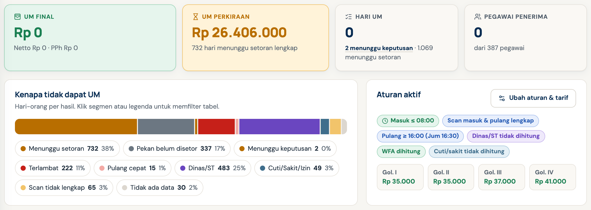
Empat ubin di atas: UM final (hanya hari yang sudah sah), UM perkiraan (hari yang menunggu setoran lengkap), Hari UM dengan tautan ke clash yang menunggu, dan Pegawai penerima. Bila PPh belum ditetapkan, ubin final hanya menampilkan bruto.
Bar horizontal menghitung hari-orang menurut hasilnya. Klik satu segmen atau satu item di bawahnya untuk memfilter tabel pegawai di bawah; klik lagi untuk melepas filter. Dua kelompok sering tertukar:
| Kelompok | Artinya |
|---|---|
| Menunggu setoran | Bukti hari itu ada dan lolos syarat, tetapi pekannya belum lengkap. Nilainya masuk UM perkiraan. |
| Pekan belum disetor | Hari itu belum punya bukti sama sekali karena sumber pekannya belum masuk. Tidak ada angka perkiraan. |
| Menunggu keputusan | Ada clash yang perlu diputuskan Admin. Tautan di ubin Hari UM membukanya. |
| Terlambat, Pulang cepat | Masuk setelah 08.00, atau pulang sebelum jadwal. |
| Dinas/ST, Cuti/Sakit/Izin | Status kerja yang menurut aturan tidak dihitung uang makan. |
| Tidak hadir (TK), Scan tidak lengkap, Tidak ada data, Lainnya | Sisanya. Scan tidak lengkap berarti hanya salah satu dari masuk atau pulang yang ada, atau Mesin Online hanya mencatat status tanpa jam. |
Kartu Aturan aktif merangkum aturan dalam beberapa chip. Aturannya sebagai berikut.
| Status dan golongan | Kelompok tarif | Tarif |
|---|---|---|
| PNS golongan I dan II, atau PPPK golongan I sampai VIII | I dan II | Rp 35.000 |
| PNS golongan III, atau PPPK golongan IX sampai XII | III | Rp 37.000 |
| PNS golongan IV, atau PPPK golongan XIII sampai XVII | IV | Rp 41.000 |
Pegawai yang golongannya kosong tidak diberi tarif tebakan. Nominalnya tertulis Pending sampai golongan dilengkapi lewat Data Pegawai atau Tambah Data. Bruto adalah uang makan sebelum PPh. Kolom PPh dan netto hanya terisi setelah Superadmin mengesahkan parameter pajak; sebelum itu daftar hanya memuat bruto dan netto tertulis Belum ditetapkan.
Tabel Daftar nominatif memuat satu baris per pegawai: golongan dan tarif, deretan titik berwarna (satu titik per hari kerja, dengan alasan di keterangan saat kursor diarahkan), jumlah hari UM, dan nominal. Cari dengan nama, NIP, atau unit, saring menurut kantor, dan urutkan menurut nama, hari UM, hari ditahan, atau bruto. Klik baris untuk membuka rincian per hari.
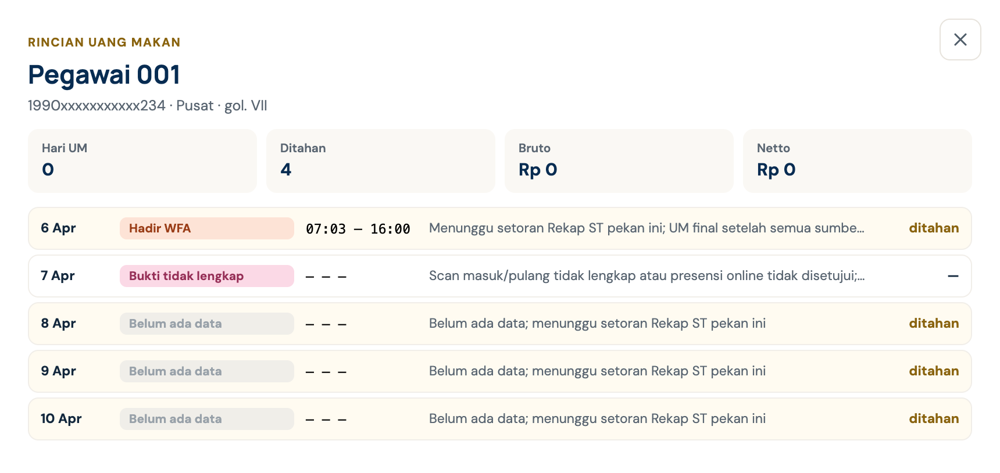
Tombol Unduh daftar nominatif menghasilkan satu berkas Excel dengan enam sheet: Nominatif, Rincian Harian, Rincian Sumber, Ditahan, Review Sumber, dan Parameter. Nama berkas memuat pekan atau bulan, dan nama kantor bila filter kantor aktif.
Tombol Aturan & tarif hanya muncul untuk Admin dan Superadmin. Admin bisa membaca isinya tetapi semua isiannya terkunci. Superadmin bisa mengubah batas kedatangan, pengesahan parameter uang makan dan parameter PPh, aturan pulang sebelum jadwal, WFA dihitung hadir, penahanan hari yang punya isu terbuka, pembayaran pegawai Non-ASN, tarif per golongan, persentase PPh, dan daftar hari libur nasional serta cuti bersama.
Panel Dampak pilihan aturan (hanya Superadmin) menampilkan pilihan siap pakai beserta jumlah hari dan bruto yang akan dihasilkan. Mengklik pilihan itu langsung mengubah aturan ruang kerja untuk semua pengguna, tanpa kotak konfirmasi. Pakai untuk membandingkan angka, lalu pastikan pilihan yang aktif sesuai ketetapan sebelum menutup halaman.
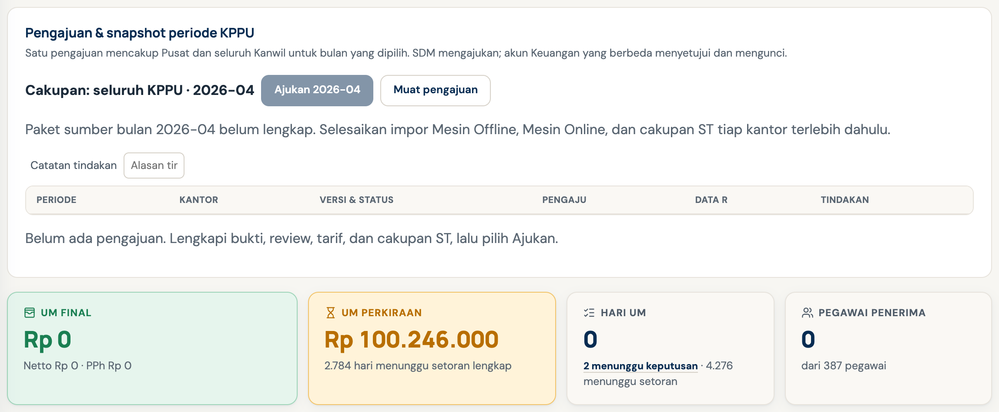
Setelah bulan selesai dan semua hari punya keputusan, hasil diajukan sebagai satu salinan tetap untuk seluruh KPPU, diperiksa oleh orang kedua, lalu dikunci.
Panel Pengajuan & snapshot periode KPPU hanya tampil di Uang Makan pada tampilan Akumulasi bulan. Teks bantu panel masih menyebut SDM dan Keuangan. Maksudnya Superadmin: pengajuan, persetujuan, dan penguncian dilakukan oleh akun Superadmin yang berbeda.
Tombol Ajukan aktif setelah semuanya terpenuhi, dan panel menjelaskan mana yang belum.
Superadmin pertama membuka Uang Makan, memilih Akumulasi bulan, dan mengklik Ajukan untuk bulan itu. Baris pengajuan muncul di tabel dengan status submitted.
Superadmin kedua, bukan yang mengajukan, membuka Lihat rincian dan memeriksa nominatif. Setelah itu ia mengisi Catatan tindakan (minimal 3 karakter) dan mengklik Setujui.
Akun kedua itu mengklik Kunci. Hasil terkunci tidak berubah lagi walau data kerja diperbarui setelahnya.
Klik Unduh snapshot Excel untuk menyimpan salinan hasil yang sudah terkunci.
Pengaju tidak bisa menyetujui atau mengunci pengajuannya sendiri. Batalkan pengajuan tersedia selama statusnya masih submitted atau approved, dengan catatan tindakan minimal 3 karakter.
Bila ada kekeliruan di bulan yang sudah terkunci, Superadmin mengklik Ajukan koreksi pada versi terkunci, dengan alasan minimal 10 karakter. Sistem membuat versi baru dan menampilkan selisih: hari dan nominal yang berubah dibandingkan versi sebelumnya, beserta total selisih netto. Versi baru harus disetujui dan dikunci lagi oleh akun lain. Versi lama tetap tersimpan sebagai arsip dengan status digantikan.
Angka selisih menjadi bahan pemeriksaan. Aplikasi tidak membuat pembayaran atau penagihan dari selisih itu, dan aplikasi memang tidak mencairkan uang. Hasil akhirnya berupa daftar nominatif untuk dasar administrasi.
Tiga halaman ini bekerja dari master pegawai. Profil terbentuk dari sumber absensi dan dilengkapi lewat impor atau isian manual.
Ringkasan pegawai KPPU. Deretan chip Kantor di bawah judul menyaring seluruh halaman: pilih Pusat atau satu Kanwil dan semua panel mengikuti. Empat angka teratas: total pegawai, rata-rata usia, perbandingan laki-laki dan perempuan, dan jumlah yang akan pensiun dalam 12 bulan.
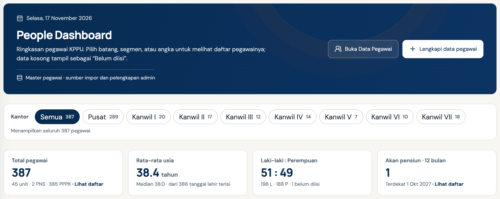
Panel di bawahnya dikelompokkan menjadi lima bagian.
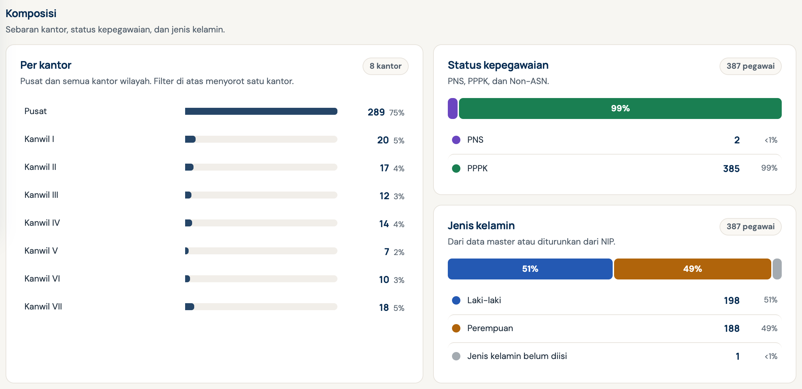
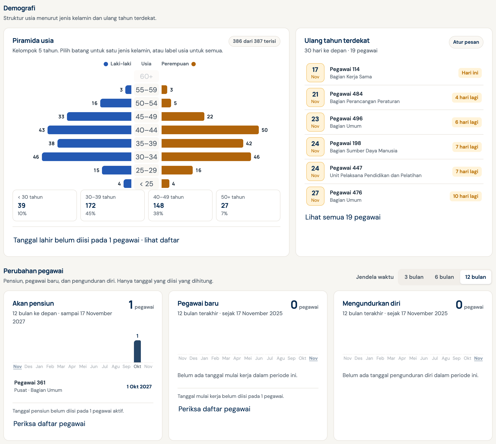
Setiap batang, segmen, dan angka bisa diklik. Panel samping terbuka dengan daftar pegawai di balik angka itu. Klik nama untuk membuka profilnya di Data Pegawai.
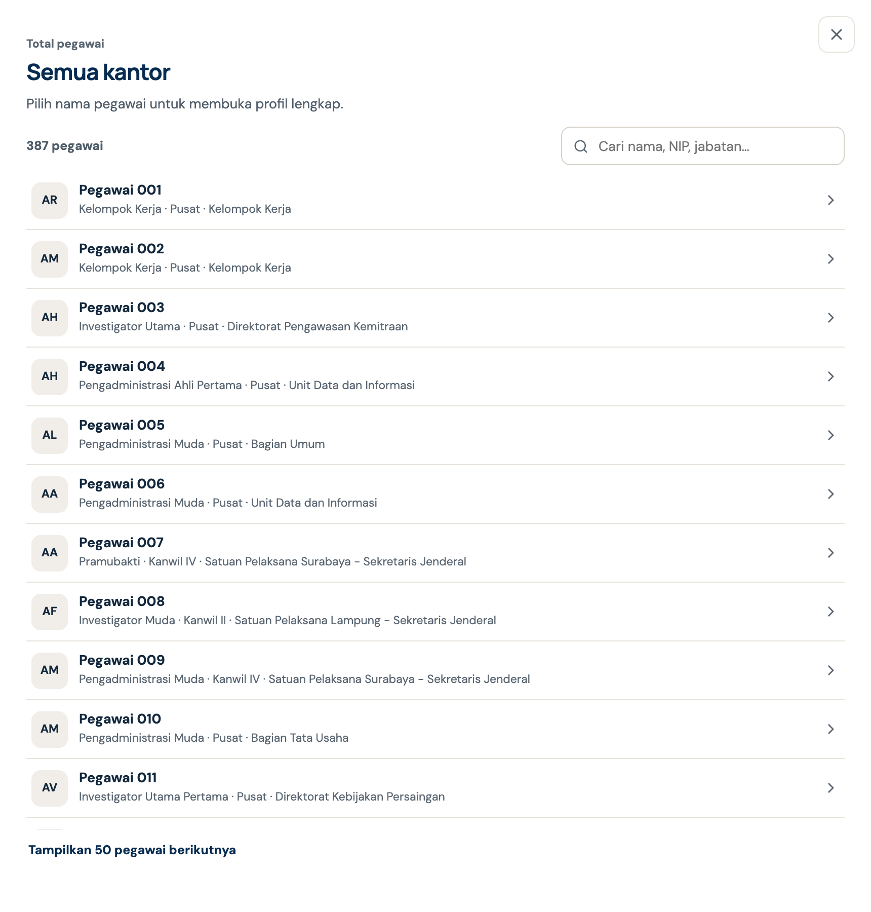
Bila tanggal lahir, pensiun, atau mulai kerja belum diisi, pegawainya tidak masuk hitungan panel terkait. Panel menampilkan catatan jumlah yang belum terisi dan tautan ke daftarnya.
Satu profil per orang. Pencarian membaca nama, NIP, NIKA, unit, dan alias dari semua sumber. Dua pilihan di sampingnya menyaring kantor dan status kepegawaian (PNS, PPPK, Non-ASN, atau Belum diketahui).
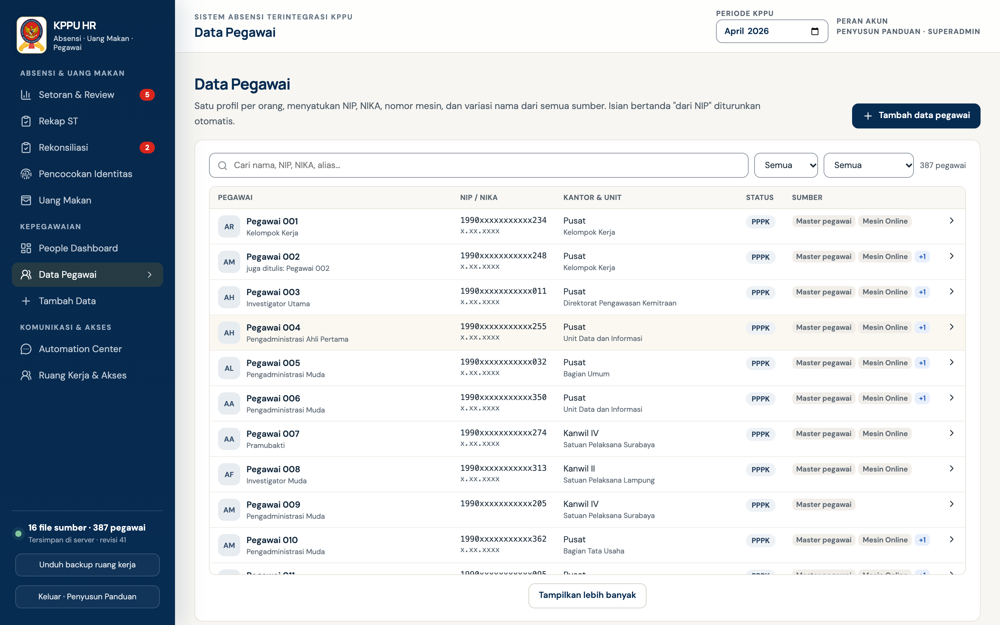
Klik baris untuk membuka profil. Profil memuat identitas dan isian kepegawaian (isian yang diturunkan dari NIP ditandai dari NIP), kehadiran bulan aktif dengan kode seperti di matriks, tautan Lihat isu pegawai ini ke Rekonsiliasi, sumber data, identitas di tiap sumber, dan ST periode itu. Dua panel bagian bawah menyangkut uang makan. Status kerja bertanggal mencatat tugas belajar atau diperbantukan ke instansi lain, yang menggugurkan uang makan hanya pada rentang efektif yang dicatat. Tarif efektif pegawai mencatat perubahan tarif atau pajak. Rentang di kedua panel tidak boleh tumpang tindih dan harus punya dasar dokumen.
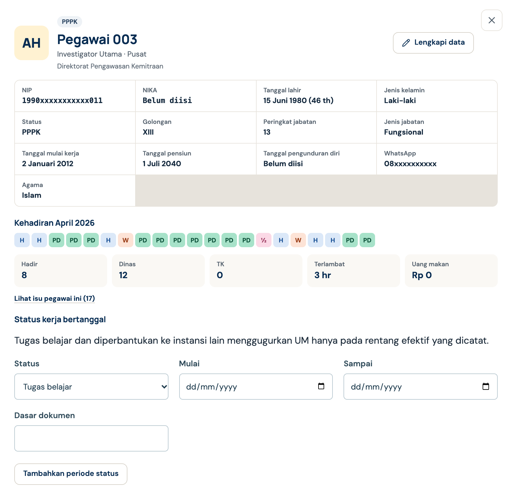
Superadmin melihat tombol Lengkapi data dan Tambah data pegawai. Admin dan Operator tidak.
Halaman ini khusus Superadmin dan punya dua mode di pojok kanan atas: Impor massal dan Isi manual. Pegawai sudah terbentuk dari sumber absensi. Halaman ini melengkapi isiannya: golongan, jabatan, peringkat, pendidikan, tanggal lahir, nomor WhatsApp, tanggal mulai kerja, pensiun, dan pengunduran diri.
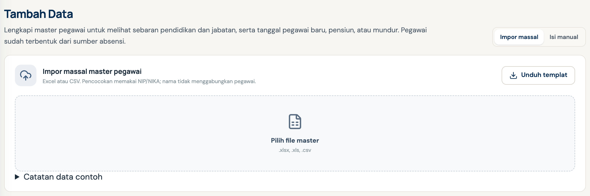
Klik Unduh templat. Berkas Template_Master_Pegawai_KPPU.xlsx berisi sheet Master Pegawai dengan satu baris contoh, dan sheet Petunjuk yang menerangkan tiap kolom.
Isi templat, lalu pilih berkasnya di kotak Pilih file master (.xlsx, .xls, atau .csv, maksimal 15 MB).
Baca pratinjau: berapa pegawai diperbarui, berapa baru, dan berapa baris bermasalah. Setiap baris menyebut tindakannya dan, bila ada, field yang berubah dari nilai lama ke nilai baru.
Perbaiki file bila ada baris bermasalah. Satu baris yang salah menahan seluruh penyimpanan, dan layar menyebut bahwa tidak ada baris yang disimpan. Setelah semua baris bersih, centang kotak konfirmasi pemeriksaan, lalu klik Simpan ke master.
Pencocokan memakai NIP atau NIKA, tidak pernah nama. Baris yang NIP atau NIKA-nya sudah ada memperbarui pegawai itu dan tidak membuat duplikat. Sel kosong di file tidak menghapus isi lama. Tombol simpan baru aktif bila status simpan menunjukkan Tersimpan di server.
Satu formulir untuk satu pegawai, dibagi dua bagian: Identitas dan Kepegawaian. NIP menjadi kunci. Tanggal lahir dan jenis kelamin dibaca dari NIP bila dibiarkan kosong. Klik Simpan pegawai setelah kolom yang diperlukan terisi. Bila NIP sudah ada, pegawai itu diperbarui.
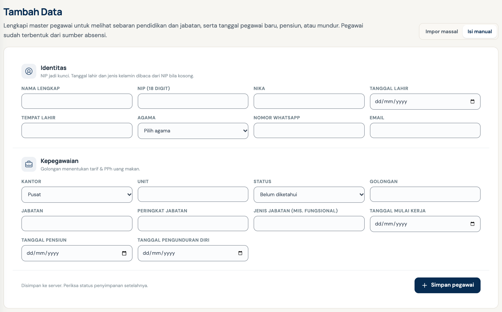
Halaman ini mengirim pesan WhatsApp otomatis dari HR: ulang tahun, hari raya, masa kerja, pengingat, dan kampanye. Mode uji menyala sejak awal, jadi tidak ada pesan yang sampai ke pegawai sebelum Anda mematikannya.
Superadmin bisa membaca dan mengubah semuanya. Admin hanya membaca. Peran lain melihat catatan bahwa halaman ini dikelola Superadmin. Data di halaman menyegar sendiri tiap 10 detik.
Bagian pertama menjawab apakah pesan benar-benar akan terkirim hari ini. Satu dari empat mode selalu terlihat.
| Mode | Efek |
|---|---|
| Mode uji | Semua pesan dialihkan ke nomor uji dengan label penerima aslinya. Bawaan sejak awal. |
| Simulasi | Pesan ditandai terkirim tanpa menghubungi WhatsApp sama sekali. |
| Dijeda | Antrean tetap tersimpan, tetapi tidak ada yang dikirim. |
| Mode produksi | Pesan dikirim ke nomor pegawai sungguhan. Muncul hanya bila ketiga mode lain mati. |
Di bawah mode ada daftar peringatan merah yang menjelaskan apa yang menghalangi pengiriman: WhatsApp belum terhubung, mode uji aktif tanpa nomor uji, hari raya yang belum dikonfirmasi, atau pegawai yang nomor WhatsApp atau agamanya belum terisi. Tombol Jalankan sekarang (Superadmin) memaksa penjadwal berjalan saat itu juga.
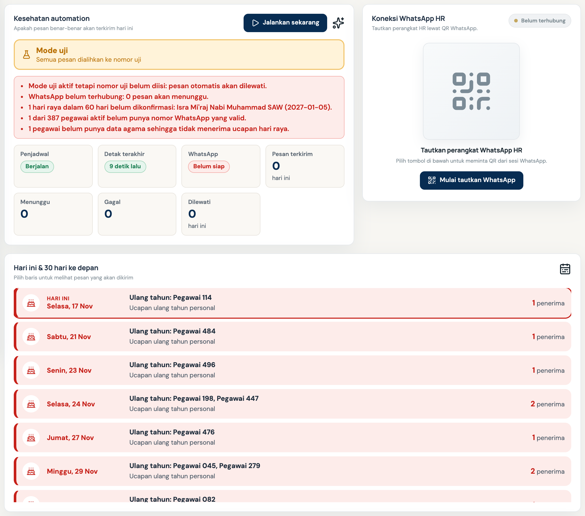
Kartu Koneksi WhatsApp HR hanya tampil untuk Superadmin. Pakai nomor kerja khusus yang disetujui organisasi, bukan nomor pribadi.
Klik Mulai tautkan WhatsApp. Kode QR muncul dan diperbarui otomatis bila kedaluwarsa.
Di ponsel HR, buka WhatsApp, pilih Perangkat tertaut, lalu Tautkan perangkat, dan pindai kode itu.
Kartu berganti menjadi WhatsApp terhubung, lengkap dengan nomor dan waktu terhubung. Tombol Putuskan perangkat mengakhiri sesi dan menghapus kredensial dari server.
Siapa pun yang memindai kode itu bisa menautkan perangkat ke nomor HR. Jangan memotret, mengirim, atau menampilkannya di layar bersama. Bila kartu menampilkan pesan bahwa koneksi belum dikonfigurasi di server, hubungi pengelola sistem. Itu bukan sesuatu yang bisa diatur dari halaman ini.
Bagian Aturan otomatis mendaftar 15 aturan dalam tiga kelompok. Terjadwal harian: ucapan ulang tahun, hari raya keagamaan, apresiasi masa kerja, dan konfirmasi data berkala. Dipicu data: presensi daring ditolak, scan pulang tidak tercatat, dan perubahan jabatan. Kampanye HR: pengingat pelatihan, perubahan hari atau jam kerja, keselamatan, e-Kinerja dan SPT, kelahiran, belasungkawa, slip gaji, dan klaim kesehatan. Klik sebuah aturan untuk membuka templat pesan, jam kirim, dan pratinjau pesan untuk tanggal tertentu. Kata di dalam kurung kurawal ganda, seperti {{nama}}, diganti data pegawai saat pesan dikirim. Tombol Kirim tes ke nomor uji baru aktif setelah ada nomor uji di Pengaturan pengiriman.
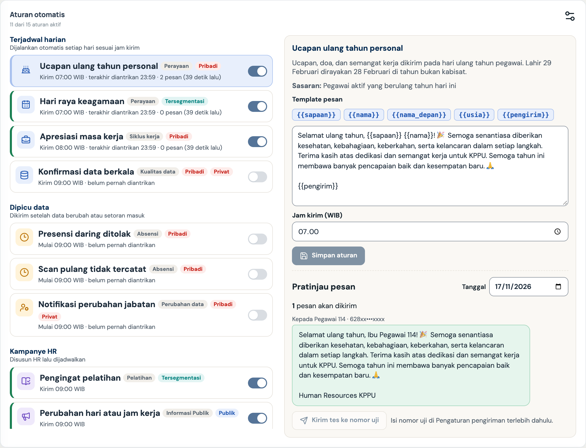
Kampanye HR mengirim satu pesan ke sasaran yang Anda pilih: semua pegawai, kantor, unit, agama, atau pegawai tertentu. Pilih jenis kampanye, tulis judul dan templat, pilih sasaran dan waktu kirim (atau klik Sekarang), lalu klik Pratinjau penerima untuk melihat siapa yang akan menerimanya dan Jadwalkan untuk menyimpan. Pilihan Ulangi setiap bulan membuat kampanye berulang, dan kampanye yang belum terkirim bisa dibatalkan dari daftarnya.
Kalender hari raya menentukan kapan ucapan keagamaan keluar. Hanya hari raya yang diberi tanda Dikonfirmasi yang dikirimi ucapan, jadi cocokkan tanggalnya dengan surat keputusan bersama sebelum mengonfirmasi. Riwayat & antrean mendaftar setiap pesan beserta statusnya, dengan tombol Coba lagi untuk yang gagal dan Batalkan pesan untuk yang masih menunggu. Nomor di tabel ini disamarkan sebagian.
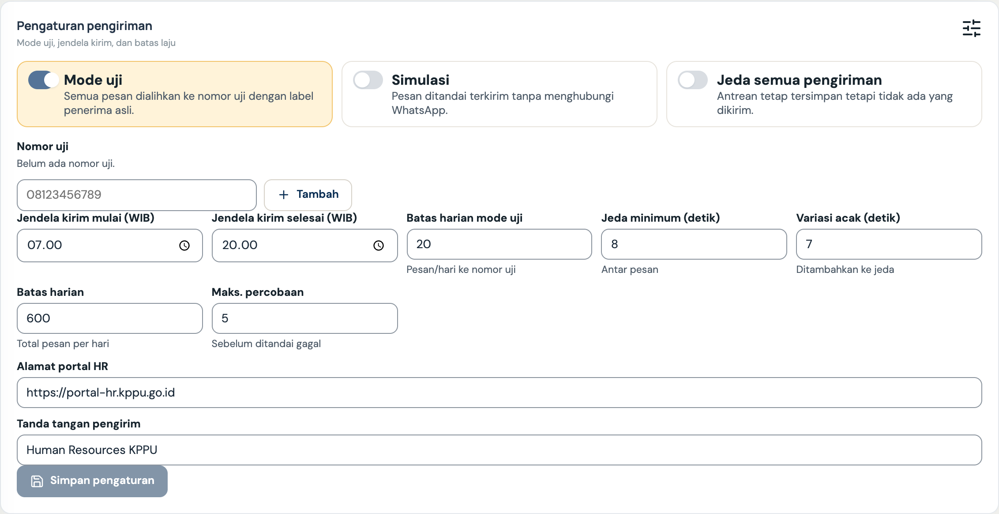
Selain tiga sakelar mode, bagian ini memuat nomor uji, jendela kirim (bawaan pukul 07.00 sampai 20.00 WIB), batas harian, jeda antar pesan beserta variasi acaknya, jumlah percobaan maksimum, alamat portal HR, dan tanda tangan pengirim. Bila mode uji menyala, minimal satu nomor uji harus terisi. Untuk beralih ke pengiriman sungguhan, urutannya:
Tautkan WhatsApp dengan kode QR dan pastikan status Terhubung.
Uji dulu di mode uji: isi nomor uji, buka sebuah aturan, dan kirim tes. Periksa isi dan nama penerima di ponsel penguji.
Matikan sakelar Mode uji. Layar meminta konfirmasi, karena sesudah itu pesan terkirim ke pegawai sungguhan. Klik Simpan pengaturan.
Halaman Ruang Kerja & Akses memuat password, backup, akun, dan riwayat perubahan. Sebagian panel hanya tampil untuk Superadmin.
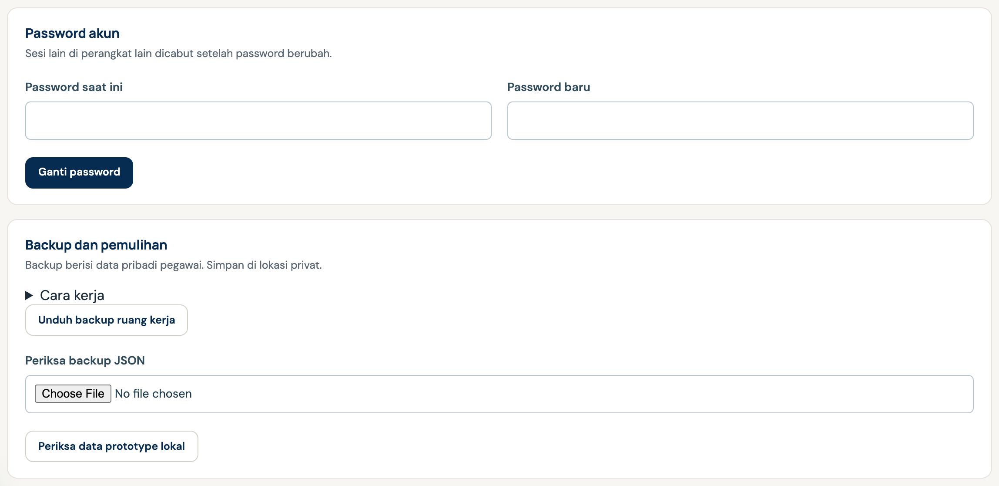
| Fungsi | Cara memakainya | Siapa |
|---|---|---|
| Ganti password | Isi password saat ini dan password baru (minimal 14 karakter), lalu Ganti password. Sesi lain dicabut, jadi perangkat lain perlu masuk lagi. | Semua peran, untuk akun sendiri |
| Backup ruang kerja | Unduh backup ruang kerja menghasilkan berkas JSON berisi data pribadi pegawai. Simpan di lokasi privat. Berkas Excel asli tidak ikut, dan backup ini bukan backup penuh basis data. | Semua peran yang membuka halaman |
| Periksa dan pulihkan backup | Pilih berkas JSON di Periksa backup JSON. Preview menampilkan jumlah sumber, master, dan keputusan, plus peringatan. Centang pernyataan bahwa ruang kerja bersama akan diganti, lalu klik Pulihkan backup. Backup versi sekarang diunduh dan disimpan server sebagai titik pemulihan lebih dulu. | Superadmin |
| Data prototype lokal | Periksa data prototype lokal membaca data lama dari peramban asal, mengunduh salinannya, dan menampilkan pratinjau. Data lama tidak dihapus. | Superadmin |
| Buat akun | Isi nama, email, password awal (minimal 14 karakter), peran, dan kantor cakupan. Sampaikan akses lewat kanal privat, tidak lewat dokumen bersama. | Superadmin |
| Ubah peran atau nonaktifkan | Pilih peran baru di tabel Akun terdaftar, lalu Simpan peran. Mengubah peran mencabut sesi akun itu. Nonaktifkan meminta alasan, dan akun yang dinonaktifkan tidak bisa masuk. Akun sendiri dan Superadmin terakhir tidak bisa diturunkan atau dinonaktifkan. | Superadmin |
| Riwayat perubahan | Muat riwayat menampilkan 100 perubahan material terakhir: waktu, aktor, jenis tindakan, nomor revisi, dan alasan. | Superadmin dan Admin |
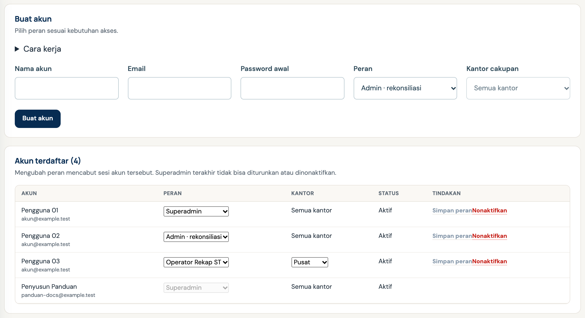
| Halaman atau tindakan | Superadmin | Admin | Operator Rekap ST |
|---|---|---|---|
| Setoran & Review: melihat | Ya | Ya | Tidak |
| Setoran: unggah, pernyataan tidak ada data, tarik file | Ya | Tidak | Tidak |
| Rekap ST: tambah ST | Ya | Tidak | Ya, kantor sendiri |
| Rekap ST: konfirmasi kelengkapan dan batalkan baris | Ya | Tidak | Tidak |
| Pencocokan Identitas dan Rekonsiliasi: memutuskan | Ya | Ya | Tidak |
| Uang Makan: melihat dan mengunduh nominatif | Ya | Ya | Tidak |
| Aturan dan tarif: mengubah | Ya | Tidak | Tidak |
| Pengajuan, persetujuan, penguncian, koreksi | Ya (akun berbeda untuk setiap tahap) | Tidak | Tidak |
| People Dashboard dan Data Pegawai: melihat | Ya | Ya | Tidak |
| Tambah Data dan mengubah profil pegawai | Ya | Tidak | Tidak |
| Automation Center | Membaca dan mengubah | Membaca | Tidak |
| Akun, pemulihan backup | Ya | Tidak | Tidak |
| Istilah | Arti |
|---|---|
| Setoran | Satu file sumber yang diunggah untuk satu pekan, atau pernyataan resmi bahwa sumber itu kosong pada pekan tersebut. |
| Mesin Offline | Ekspor mesin absensi kantor, termasuk rekap lokal Kanwil. |
| Mesin Online | Presensi dari aplikasi di ponsel (WFO dan WFA). |
| Rekap ST | Daftar surat tugas, satu surat berisi beberapa pegawai dan satu rentang tanggal. |
| Kantor register ST | Label asal surat saat memasukkan ST. Tidak membatasi pegawai dan tidak memecah konfirmasi kelengkapan. |
| Clash | Hari yang buktinya bertentangan antar sumber dan menahan uang makan sampai Admin memutuskan. |
| Valid otomatis | Hari yang punya bukti dan tidak bertentangan, sehingga tidak perlu keputusan. |
| Flag | Hari yang menunggu keputusan. Di matriks ditandai !. |
| Tidak ditemukan | Belum ada bukti untuk hari kerja itu. Belum tentu mangkir. Di matriks ditandai ?. |
| Pekan aktif | Pekan yang sedang dilihat di Setoran, Rekonsiliasi, dan Uang Makan. Tersimpan di peramban Anda. |
| UM final | Uang makan hari yang sudah sah dan pekannya lengkap ketiga sumbernya. |
| UM perkiraan | Uang makan hari yang memenuhi syarat tetapi pekannya belum lengkap. |
| Bruto dan netto | Uang makan sebelum dan sesudah PPh. Netto muncul setelah parameter PPh disahkan. |
| Nominatif | Daftar penerima uang makan per orang beserta jumlah hari dan nominalnya. |
| Snapshot | Salinan tetap nominatif satu bulan beserta aturan dan revisi data saat diajukan. |
| NIP, NIKA | Identitas pegawai. NIP 18 digit. NIKA dipakai mesin Kanwil II dan dalam nama berkas foto aplikasi HP. |
| Alias | Cara lain sebuah sumber menulis orang yang sama: nama singkat, nomor mesin, ID aplikasi. |
| Mode uji | Pengaturan Automation Center yang mengalihkan semua pesan ke nomor uji. |
| Yang terlihat | Yang perlu diperiksa |
|---|---|
| Aplikasi membuka bulan yang salah | Ganti Periode KPPU di pojok kanan atas. Bila belum ada periode yang tersimpan, aplikasi membuka bulan terbaru yang terdeteksi dari file sumber, dan itu bisa bukan bulan yang Anda maksud. |
| Akun tidak bisa masuk dan menyebut peran tidak berlaku | Akun masih memegang peran lama. Minta Superadmin memilih Superadmin, Admin, atau Operator Rekap ST untuk akun itu di Ruang Kerja & Akses. |
| Tombol unggah tidak ada | Unggah hanya untuk Superadmin. Akun Admin hanya melihat Lihat sumber. |
| File ditolak: terdeteksi sebagai sumber lain | Pindahkan file ke kartu yang sesuai. Bila ragu, buka lipatan Format file yang dapat dibaca. |
| Banyak baris di karantina atau file tidak terbaca | Pakai file asli dari sumbernya tanpa disimpan ulang. Periksa header dan format tanggal, simpan kolom NIP sebagai teks, lalu buka catatan file di lipatan File sumber. |
| Sel sumber tetap kuning atau merah setelah unggah | Lihat tanggal terakhir di file. Ekspor yang berakhir sebelum akhir pekan tercatat Sebagian. Untuk Rekap ST, periksa juga konfirmasi bulanan di halaman Rekap ST. |
| Konfirmasi kelengkapan ST tiba-tiba terbuka lagi | Seseorang menambah ST baru pada bulan itu. Periksa daftar rekap, lalu konfirmasi ulang. |
| Konfirmasi rekap lengkap tidak aktif | Bulannya belum berakhir, atau bulan itu hanya punya ST dari Excel. Untuk yang kedua, konfirmasi lewat File sumber di Setoran & Review. |
| Hari tertahan dan tidak ada clash di antrean | Cek catatan kuning di atas Rekonsiliasi: nama panggilan di Rekap ST mungkin belum dicocokkan. Selesaikan di Pencocokan Identitas. |
| Satu pegawai muncul dua kali | Buka Pencocokan Identitas, tab Pegawai tanpa NIP atau panel Konflik identitas. Jangan menghapus profil atas dasar nama yang mirip. |
| UM final masih Rp 0 dan ada angka perkiraan | Salah satu dari tiga sumber pekan itu belum dinyatakan lengkap. Cek papan di Setoran & Review, sel yang bukan hijau atau biru. |
| Nominal tertulis Pending | Golongan pegawai belum terisi. Lengkapi lewat Data Pegawai atau Tambah Data. |
| Netto tidak terlihat | Parameter PPh belum disahkan Superadmin, atau belum dianggap lengkap. Bruto tidak sama dengan netto. |
| Tombol Ajukan tidak bisa diklik | Baca keterangan di bawah tombol: paket sumber belum lengkap, atau masih ada hari tanpa keputusan, isu terbuka, parameter belum disahkan, atau status simpan belum Tersimpan. |
| Setujui atau Kunci tidak muncul | Akun yang mengajukan tidak bisa menyetujui atau mengunci. Gunakan akun Superadmin lain, dan isi Catatan tindakan lebih dulu. |
| Perubahan belum tersimpan | Unduh Backup pekerjaan dari kotak merah, lalu coba Coba simpan. Bila server menolak karena data berubah oleh pengguna lain, pilih Muat data server dan ulangi perubahan Anda. |
| Pesan WhatsApp tidak terkirim | Cek Kesehatan automation: apakah mode uji, simulasi, atau jeda aktif, apakah WhatsApp Terhubung, apakah nomor pegawai dan agamanya terisi, dan apakah hari raya sudah dikonfirmasi. |
| Kode QR WhatsApp tidak muncul | Periksa status di kartu koneksi. Bila tertulis belum dikonfigurasi di server, hubungi pengelola sistem. Jangan mengirim kode QR ke siapa pun. |
Panduan ini menjelaskan tampilan dan perilaku aplikasi per November 2026. Aturan uang makan, parameter PPh, dan data master resmi tetap mengikuti ketetapan pejabat yang berwenang.